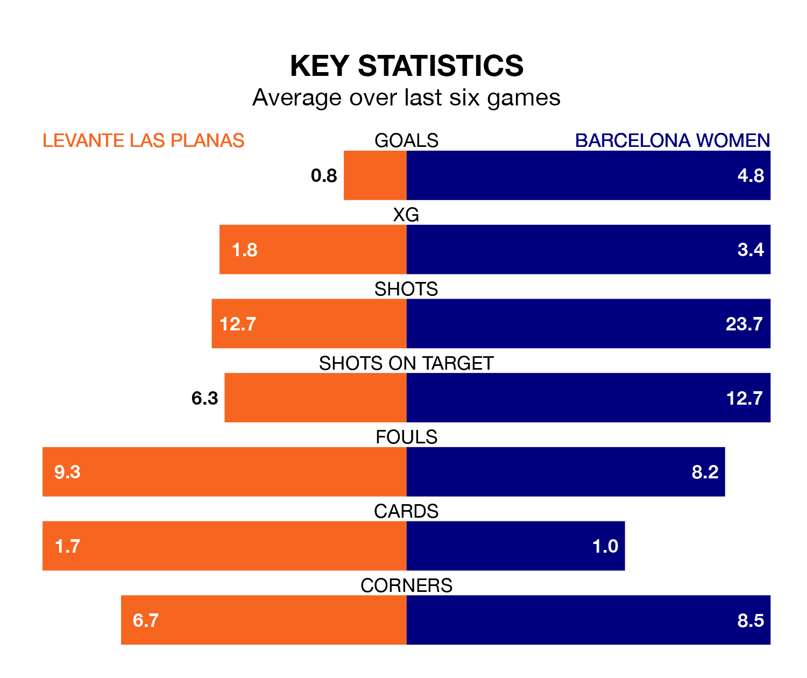

Relegation candidates Levante Las Planas face a challenge against high-flying Barcelona Women at Camp Municipal Les Planes on Wednesday.
Levante Las Planas are 13th in the Liga F table, and have picked up four wins and eight draws in their 23 games to date.
Barcelona, meanwhile, are top of the standings with 67 points, having won 22 and drawn one.
With 102 goals in 23 games so far this season, Barcelona are the league's highest scorers with 4.4 goals per game. And they are conceding fewer than average, letting in six goals at a rate of 0.3 per game.
Levante Las Planas, meanwhile, are below average scorers, with 1.1 goals per game, compared to a league average of 1.6. They have conceded 2.0 goals per game.
The home side are in terrible form in Liga F, with no wins and a draw from their last six games.
With six wins and no losses over that period, the visitors' form is much better – they have taken 18 points from 18, compared to Levante Las Planas's one.
In Caroline Graham Hansen and Salma Paralluelo Ayingono, Barcelona have the league's sharpest shooters so far this season. They have notched 17 goals each.
Levante Las Planas's top scorer, with seven goals in 21 games, is Jessica Dahiana Martínez Villagra.
In the last three years, Levante Las Planas and Barcelona have played each other on three occasions. Barcelona won all of them.
Their last meeting was on January 6, when Barcelona won 9-1 at home.
Levante Las Planas's last match was on April 13, a 2-1 loss against Real Betis Women, with Ghizlane Chebbak getting the goal for Levante Las Planas.
Barcelona beat Villarreal Women 5-1 last time out, also on April 13, with Paralluelo Ayingono (two), Alexia Putellas Segura, Claudia Pina Medina and Fridolina Rolfö on the scoresheet.
Updated: 11:31 (UTC), 15/04/24